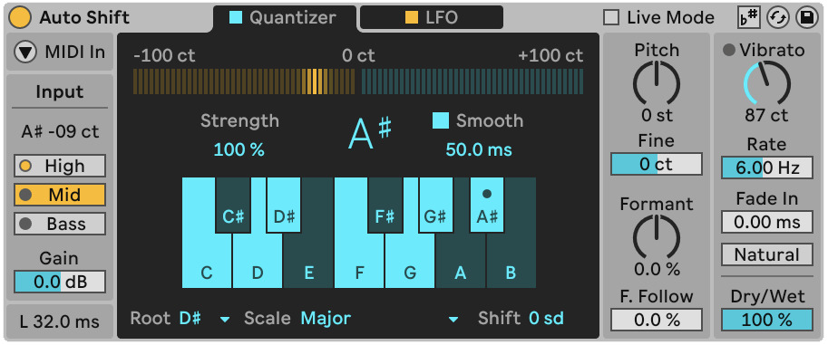

Live Audio Effect Reference
Released: October 08, 2024
Edition: Live 12.1
1. Auto Shift

Auto Shift is a real-time pitch tracking and correction effect made for monophonic audio (with a inclination towards vocal recordings and samples). It can receive pitch information in two main ways:
- Scales - you define in the device (Quantizer)
- MIDI notes - coming from another track (MIDI sidechain), which could be helpgul for harmonies and pitch control.
Usage
Auto Shift is categorized in the new version of Live as an Audio Effect. It can work best when added to an audio track that contains a clear pitched signal (voice, monophonic synth lead, bass, etc.).
- Drag Auto Shift onto an audio track.
- In the Input section, you can choose a Pitch Range (High / Mid / Bass) that matches the source.
- Next, you can use one of the correction modes:
- Quantizer: pick a Root + Scale (or select included notes), then adjust Correction Strength.
- MIDI: enable MIDI In, choose a MIDI track as the source, and play notes to control the correction.
- Set Dry/Wet to balance natural vs corrected sound.
Input - Pitch Tracking and Latency
The Input section is where you optimize tracking before you touch “tuning” parameters.
- Input Pitch shows the detected notes in letter notation and cents.
- Pitch Range (High / Mid / Bass) selects the expected input range, making the detection more reliable.
- Input Gain (-24 to +24 dB) trims the signal incoming into the detector.
- Latency is displayed in milliseconds.
- Live Mode (toggle in the title bar) reduces latency for performance, but can introduce gltiches depending on how fast the pitch changes
Quantizer Mode - Scale-Based Correction)
Quantizer corrects incoming audio to the notes of a defined scale.
| Control | What it does |
|---|---|
| Correction Strength | How strongly the audio is corrected to reach the target note |
| Smooth | Changes the interpolation time for more less artifacts - rannging from 0ms to 200ms |
| Root & Scale | Changes the target musical scale the device should reach |
| Included Notes | Lets you build a custom scale by enabling/disabling notes |
| Pitch Shift (scale degrees) | Transposes the sound after correction, while maintaining the target key |
If Use Current Scale is enabled in the device title bar, Auto Shift will follow the active clip scale selected in the session (“scale awareness”), and the scale’s notes will be highlighted.
MIDI Mode (Pitch Correction from Notes)
When you enable MIDI In, Auto Shift switches to using incoming MIDI data to determine the target pitch instead of using the scale established in the Quantizer.
- Choose the External Source (the MIDI track sending notes)
- Choose the Tapping Point (Pre FX / Post FX / Post Mixer)
- Choose a voice mode:
- Mono: one note at a time (includes Glide for sliding between note values)
- Poly: up to 8 voices (2 / 4 / 8) for harmonization
Important: If MIDI Input is to be enabled, Auto Shift will only output audio when it is receiving MIDI notes.
LFO Tab (Modulation)
Auto Shift includes an LFO that can modulate the following values: Pitch, Formant, Volume, and Pan.
- Reset can retrigger the LFO at onsets (pitch detection onsets in Quantizer mode, or note onsets in MIDI mode)
- Delay / Attack shapes how the LFO fades in and fades out
- Waveform offers multiple shapes (including stepped, sample and hold and random variants)
- Rate can run free or sync to tempo
The LFO will affects the incoming signal whether or not pitch correction is enabled.
Pitch and Formant Shifting
You can use pitch and formant controls for “tuned” effects or as a creative pitch/formant shifter.
| Control | What it does |
|---|---|
| Pitch Shift (semitones & cents) | Transposes the signal with the option fine in order to tune it in cents |
| Formant Shift (-100% to 100%) | Changes tonal and timbral character without changing perceived pitch |
| Formant Follow | Links formant movement to pitch movement for more natural results |
Vibrato
Vibrato is useful for subtle motion or “harder” pitch effects.
- Amount: 0–200 cents
- Rate: 2–15 Hz
- Fade In: how quickly the vibrator reaches it target value
- Natural Vibrato adds small variations for a more organic feel
The Dry/Wet control also lives here. At 50%, you can create a simple doubler-style blend between dry and processed signals.
FAQ
Does Auto Shift work on chords or full mixes?
It’s mainly designed for monophonic sources. Polyphonic material can confuse pitch detection; for harmonies, please use MIDI input (Poly) to generate more controlled results.
Why is there latency?
Auto Shift analyzes pitch in real time - therefore tracking introduces latency. The way to mediate this is by using Live Mode which can reduce latency for performance.
Why do I get no output in MIDI mode?
With MIDI input enabled, Auto Shift only produces sound while it receives MIDI notes. Check the MIDI source routing and make sure notes are being sent.
Changelog
| Version | Change |
|---|---|
| 12.1.5 | In Auto Shift, MPE pitch bend now uses a 48 semitones range. Fixed a bug that caused phasing artifacts in Auto Shift when MIDI Input was turned off while notes were still playing. Mapping the Scale and Root parameters to a Rack’s Macro Controls now works as expected in the Scale, Arpeggiator, and Auto Shift devices. |
| 12.1 | First release of Auto Shift |
2. Chorus Ensemble
Chorus-Ensemble is time modulation device developed inside Live 12 and earlier versions. It serves as a chorus effect with multiple modes(Chorus, Ensemble,Vibrato) each tailoring to different use. With the latest update, the Clasic mode has been renamed to Chorus to better reflect it resulting effect. The updated Chorus mode features two new parameters with which you can interact:
- Time - you can now select the time between the delay lines as opposed to having them scaled dynamically per tap. This setting also included the previous behaviour by selecting Auto.
- Tap - is a parameter which allows you to switch between a one or two tap delay.